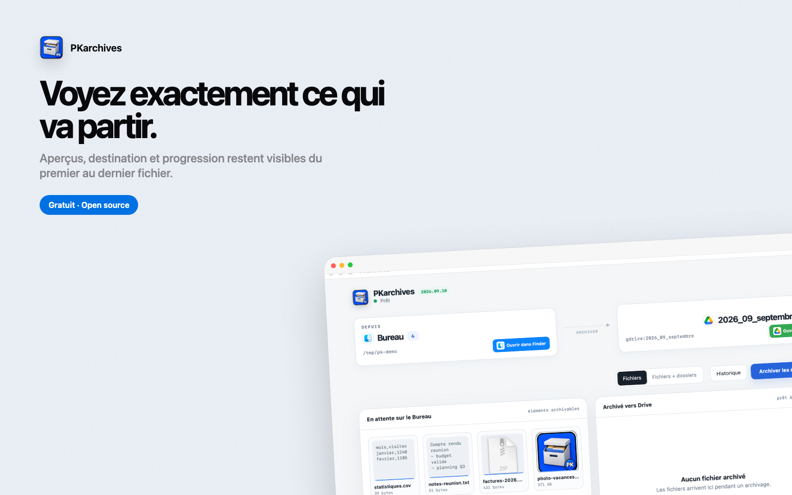
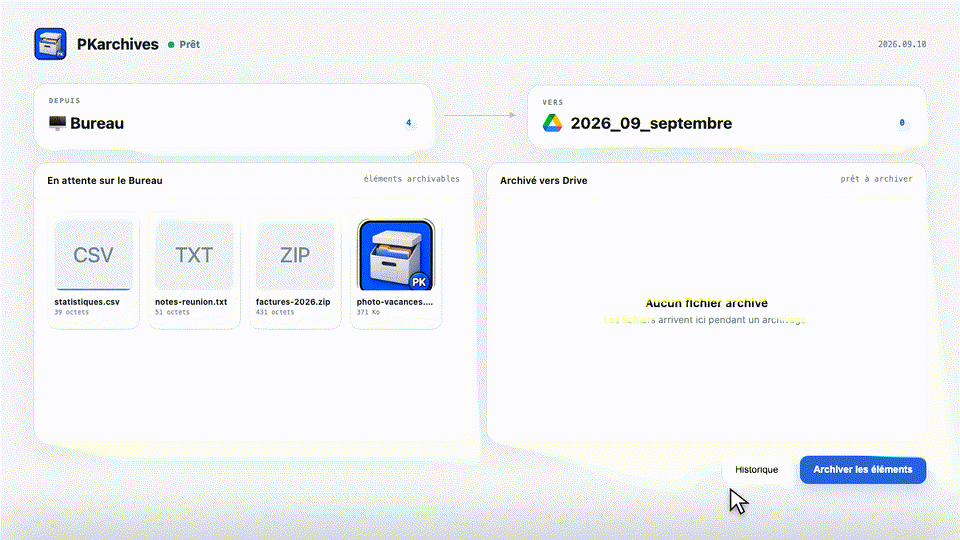
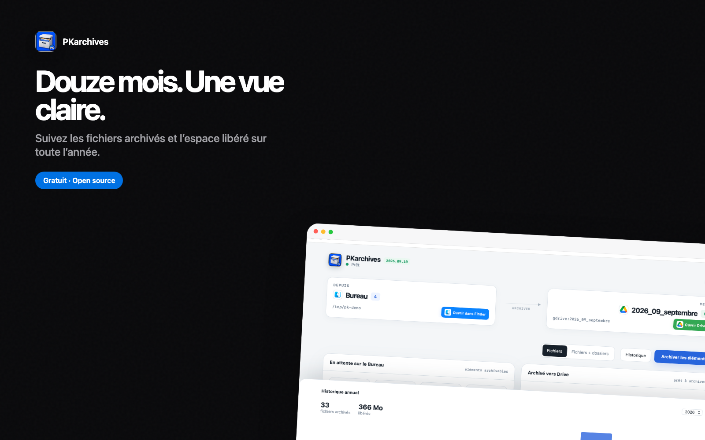

Un Bureau propre sans y penser
Un clic et tous les éléments éligibles partent dans un dossier mensuel, sans tri manuel.
Gratuit et open source
PKarchives range les fichiers de ton Bureau dans un dossier mensuel de ton Google Drive. Dossiers et sous dossiers restent intacts, les aperçus défilent, et ton écran respire enfin.
Open source MIT · Propulsé par rclone · macOS 14 et plus

Captures d'écran, DMG, téléchargements rapides. En trois jours, ton Bureau ressemble à une décharge et plus personne ne s'y retrouve. PKarchives fait le ménage pour de bon : chaque élément éligible part sur Drive, rangé par mois, et ton Bureau redevient un Bureau.
Un clic et tous les éléments éligibles partent dans un dossier mensuel, sans tri manuel.
L'arborescence des dossiers est conservée sur Drive, et la suppression locale n'arrive qu'après un upload réussi.
Miniatures, extraits de texte et vignettes qui se remplissent pendant l'upload.
Fichiers archivés et espace libéré, mois par mois, avec sélecteur d'année.
Réglages partagés entre l'app et la CLI dans un seul dossier de configuration.
Fichiers seuls, ou fichiers et dossiers, selon l'état de ton Bureau.
Une première configuration guidée : ID du dossier, remote rclone, chemin du Bureau.
Les cartes s'envolent vers Drive pendant l'upload et l'historique se remplit.
Fichiers rangés sur Drive par mois, prêts à être retrouvés quand tu en as besoin.


Les transferts passent par rclone, directement entre ta machine et ton Drive. Aucun serveur intermédiaire.
La suppression locale se fait au choix vers la corbeille ou de façon définitive. Tu décides.
Le code est public et auditable, partagé avec la CLI du même projet.
Seulement après un upload réussi vers Drive, et seulement si tu l'as choisi : corbeille ou définitif. Un fichier qui n'est pas parti reste sur le Bureau.
Dans un dossier mensuel de ton Drive, du type 2026_09_septembre. Les dossiers du Bureau y retrouvent leur arborescence complète.
Non. PKarchives gère rclone pour toi et te guide lors de la première configuration.
Oui. Un dossier du Bureau part avec toute sa structure sur Drive, depuis la version 2026.09.14.
Oui, d'un Drive avec assez d'espace pour ton Bureau. L'app se connecte via rclone avec ton compte.
Ils vivent dans un fichier de configuration local, hors du code source. Les transferts sont directs entre ta machine et Google.
Le remote rclone est configurable : S3, Dropbox, et d'autres services compatibles rclone.
macOS 14 et plus, Apple Silicon et Intel. L'app pèse quelques Mo et vit dans la barre des menus.
Installe PKarchives, connecte ton Drive, et laisse chaque capture d'écran trouver sa place.
Gratuit · Licence MIT · Aucune donnée tierce